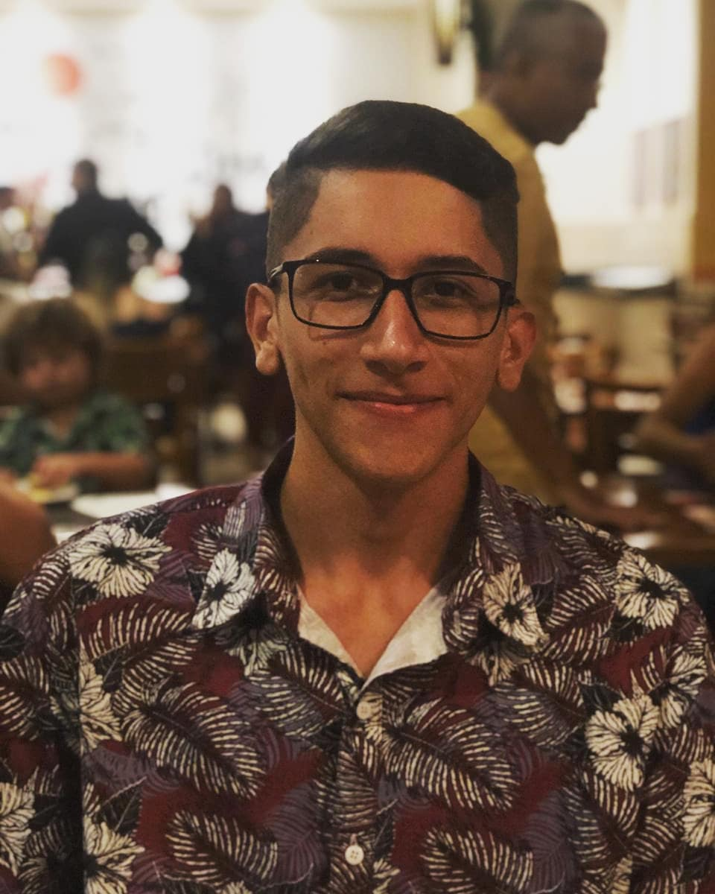

15 de maio de 2023
Jornada na Cati - Soluções em Tecnologia:

Entrei como Analista de suporte na Cati. - Experiência com banco de
dados(Firebird e SQL Server), - Manutenções e DUMP de banco de dados
Firebird/SQL Server, - Configuração de servidores e serviços da Fortes
Tecnologia, - Contato e conexões remotas com clientes., -
Desenvolvimento em BAT para automação de tarefas, - Desenvolvimento em
C# para automação de tarefas, - Desenvolvimento em Python para
automação de tarefas